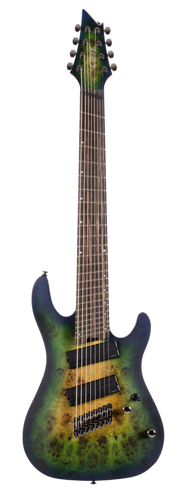
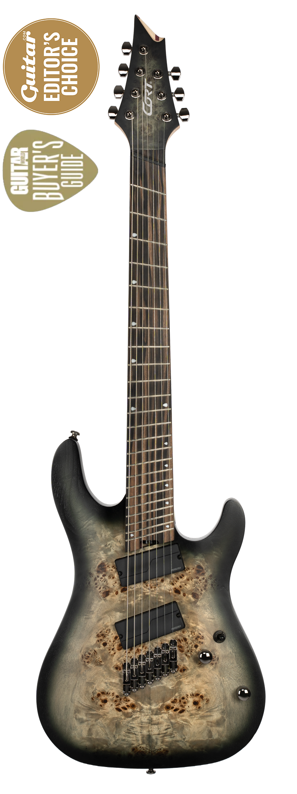
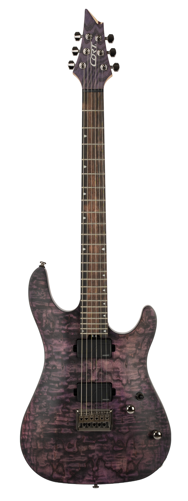
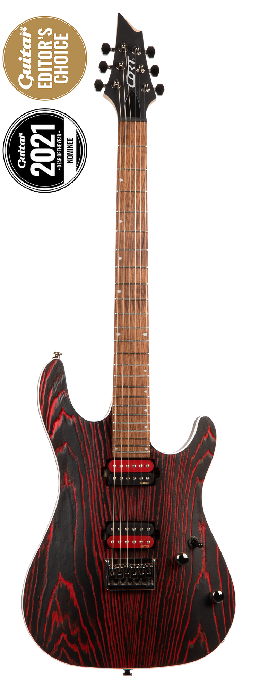
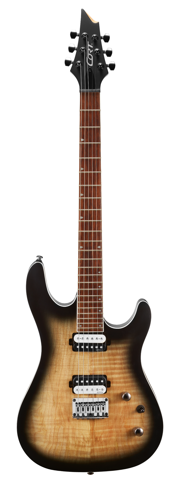
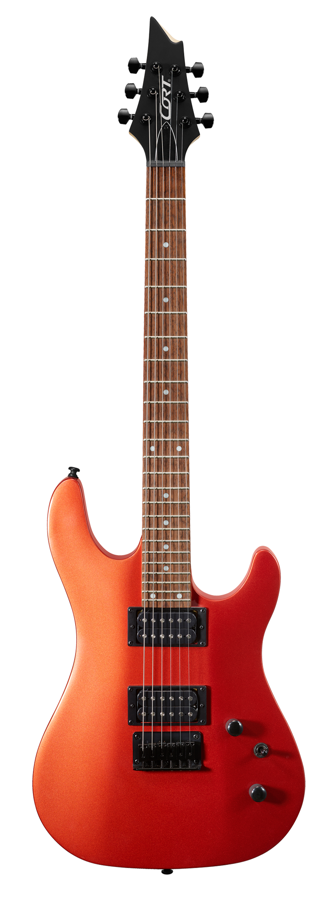

Серія KX
Серія KX призначена для абсолютно сучасних гітаристів, які готові
вийти за традиційні межі, оснащені такими функціями, як гриф із швидким і легким доступом на 24 лади,
агресивний стиль, потужні звукознімачі, багатомасштабні грифи та варіанти на 7 або 8 струн.

Натисніть і утримуйте для збільшення
Cort-KX508 Multi Scale II
| Кріплення грифу: | Bolt-On |
| Корпус: | Okoume |
| Ширина верхнього порожка: | 2 7/32“ (56.5㎜) |
| Топ / верхня дека: | Poplar Burl |
| Гриф: | 5pcs Maple & Purple Heart |
| Накладка грифа: | Macassar Ebony Radius: 15.75" (400㎜) |
| Лади: | 24 |
| Мензура: | 26.5" - 28" Multi-Scale |
| Інкрустація накладки грифа: | Tear Drop |
| Колкова механіка: | Cort® Staggered Locking Tuners |
| Брідж: | Individual Hardtail Bridge w/ String Thru Body |
| Електроніка: | 1 Volume(P.P.) & 1 Tone(P.P.) 3 Way Selector |
| Струни: | D'Addario® NYXL0980 |
| Звукознімачі: | Fishman® Fluence Modern Humbucker Set |
| Фурнітура: | Black Nickel |
| Забарвлення: | Mariana Blue Burst |
Ціна: 27 310 грн

Натисніть і утримуйте для збільшення
Cort-KX507 Multi Scale
| Кріплення грифу: | Bolt-On |
| Корпус: | Mahogany |
| Топ / верхня дека: | Poplar Burl |
| Гриф: | 5pcs Maple & Purple Heart |
| Накладка грифа: | Macassar Ebony Radius: 15.75"(400㎜) |
| Лади: | 24 |
| Мензура: | 25.5"-27" Multi-Scale |
| Колкова механіка: | Cort® Staggered Locking |
| Брідж: | Individual Bridge w/ String Thru Body |
| Електроніка: | 1 Volume(P/P), 1 Tone(P/P), 3 Way Switch |
| Струни: | D'Addario® EXL110 + NW059 |
| Звукознімачі: | Fishman® Fluence Modern Humbucker Set |
| Фурнітура: | Black Nickel |
| Забарвлення: | Star Dust Black, Star Dust Green |
Ціна: 24 340 грн

Натисніть і утримуйте для збільшення
Cort-KX500 Etched
| Кріплення грифу: | Bolt-On |
| Корпус: | Mahogany |
| Топ / верхня дека: | Ash Burl(Sand Blasted) |
| Гриф: | 5pcs Maple & Purpleheart |
| Накладка грифа: | Macassar Ebony Radius: 15.75"(400㎜) |
| Лади: | 24 |
| Мензура: | 25.5"(648㎜) |
| Колкова механіка: | Cort® Staggered Locking Machineheads |
| Брідж: | Single Hardtail bridge with String Thru Body |
| Електроніка: | 1 Volume(P.P.) & 1 Tone(P.P.) 3 Way Pickup Selector |
| Струни: | D'Addario® EXL 110 |
| Звукознімачі: | Fishman® Fluence Modern Humbucker |
| Фурнітура: | Black Nickel |
| Забарвлення: | Etched Deep Violet, Etched Black |
Ціна: 23 100 грн

Натисніть і утримуйте для збільшення
Cort-KX300 Etched
| Кріплення грифу: | Bolt-On |
| Корпус: | Mahogany |
| Топ / верхня дека: | Ash(Sand Blasted) |
| Гриф: | Hard Maple |
| Накладка грифа: | Pau Ferro Radius: 15.75"(400㎜) |
| Лади: | 24 |
| Мензура: | 25.5"(648㎜) |
| Колкова механіка: | Die-Cast |
| Брідж: | Hardtail Bridge w/ String Thru Body |
| Електроніка: | 1 Volume & 1 Tone 3 Way Pickup Selector |
| Звукознімачі: | EMG® RetroActive Super77 |
| Фурнітура: | Black Nickel |
| Забарвлення: | Etched Black Red, Etched Black Gold |
Ціна: 15 930 грн

Натисніть і утримуйте для збільшення
Cort-KX300
| Кріплення грифу: | Bolt-On |
| Корпус: | Mahogany w/ Spalted Maple Top |
| Топ / верхня дека: | Figured Maple Top |
| Гриф: | Hard Maple |
| Окантовка: | White |
| Накладка грифа: | Jatoba Radius: 15.75"(400㎜) |
| Лади: | 24 |
| Мензура: | 25.5"(648㎜) |
| Колкова механіка: | Die-Cast |
| Брідж: | Hardtail w/ String-Thru Body |
| Електроніка: | 1 Volume & 1 Tone, 3 Way Toggle Switch |
| Струни: | D'Addario® EXL110 |
| Звукознімачі: | EMG® Retroactive Super 77 Set |
| Фурнітура: | Black Nickel |
| Забарвлення: | Open Pore Raw Burst, Open Pore Cobalt Burst |
Ціна: 12 540 грн

Натисніть і утримуйте для збільшення
Cort-KX100
| Кріплення грифу: | Bolt-On |
| Корпус: | Nyatoh |
| Гриф: | Hard Maple |
| Накладка грифа: | Jatoba Radius: 15.75"(400㎜) |
| Лади: | 24 |
| Мензура: | 25.5"(648㎜) |
| Колкова механіка: | Die-Cast |
| Брідж: | Hardtail |
| Електроніка: | 1 Volume & 1 Tone, 3 Way Toggle Switch |
| Звукознімачі: | Powersound Pickups |
| Фурнітура: | Black |
| Забарвлення: | Iron Oxide, Metallic Ash, Black Metallic |
Ціна: 7 425 грн